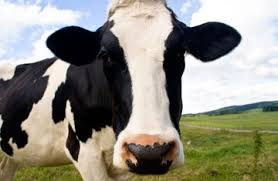
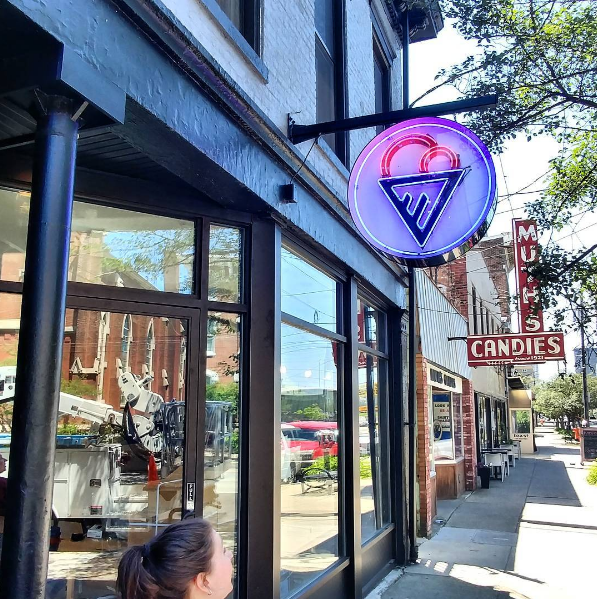

Louisville Cream is a small batch gourmet ice cream company located in Louisville, KY. We make homemade ice cream with local ingredients, produce, milk - and homemade mix-ins and baked goods! We also do catering, events, and custom flavors!
We're nuts about ice cream, so every batch is special and has lots of love go into it. We make have our own menu staple flavors, some rotating seasonal flavors, and custom flavors for catering!
We started in January of 2014...because we're the kind of people who dream about ice cream in the dead of a Kentucky winter. What once was a hobby, bloomed into a legitimate affair - an affair between ice cream and man. This love affair is deep and passionate, and we're not afraid to tell the world; we love ice cream!
...Psssssssssssst! Hey you - yeah, ice cream lover sitting in front of the screen; we can also make custom flavors! You dream it, we can make it! If you'd like to have an ice cream experience like no other, give us a shout at info@louisvillecream.com
Come see us at our new scoop shop in NULU at 632 E Market Street! Before Summer 2017, we had to slog it out to hot events to get our ice cream out, and now you can sit in a SWEET air conditioned location with - get this- more stuff to eat. Check out the menu on the flavors tab for more details!
These are the regulars that ain't goin' nowhere! Come find out which one is your favorite!Make your event a little happier with Louisville Cream! We can bring some of our delicious staple ice creams, or concoct your ultimate dream flavor!Give it a try!You won't be sorry.
Pints now available at Old Town Wine & Spirits Rainbow Blossom Whole Foods in Louisville Omni Hotel Marriott Downtown
HOURS
Check back often, we change these guys up as the seasons change. We're going to hook you up with the best in-season produce in your ice cream, sundaes, sorbets, vegan ice creams, and more. Only the best for you...yes, you!